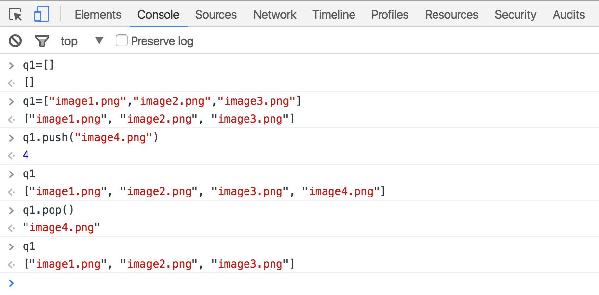

Question 1 - Create an array of image source filenames
by Using "image1.png", "image2.png", and "image3.png" as the array values
XXXXXXX
Question 2 - Using the array from Question 1, store the first element of the array in variable q2
Question 3 - Get the length of the first array (number of elements in the array) and store it in variable q3
Question 4 - Using the array from Question 1, store the last element of the array in variable q4. Hint: How can we get the number of elements in the array?
Question 5 - Create an array of numbers using 1, 2, 3, and 4 as values. Use a for loop, a forEach loop function to increase each value by 1. You can either store each new value back in the original array, or in a new array -- your choice. The end result should be an array of numbers with values 2, 3, 4, and 5.
Question 6 - Using the array from Question 5, find the average of the numbers in the array (average = sum of all numbers/number of numbers). Store the average in q6.
Question 7 - Techquine #1 for looping over an array - using forEach method with callback function
Question 8 - Technique #2 for looping over an array - using the traditional "for loop" technique